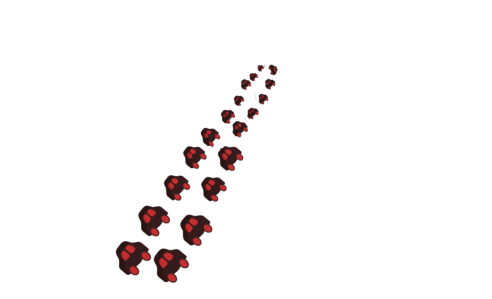
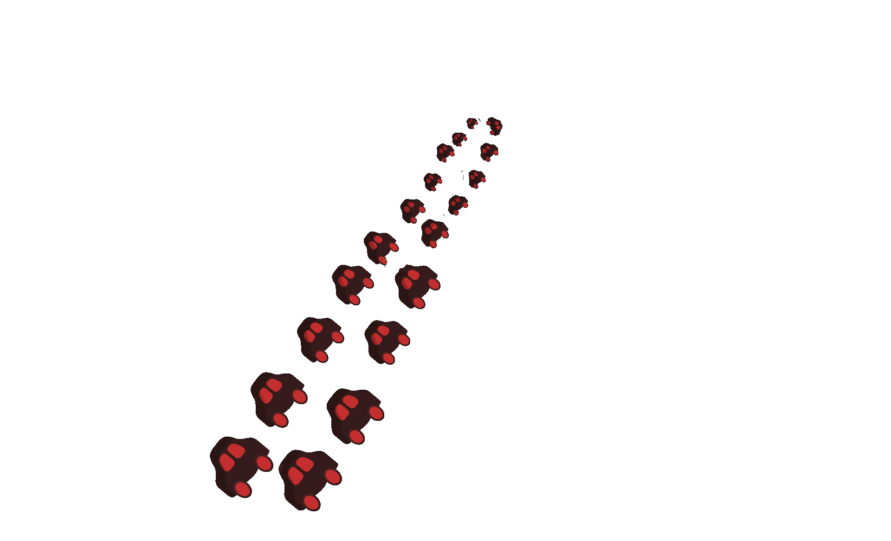
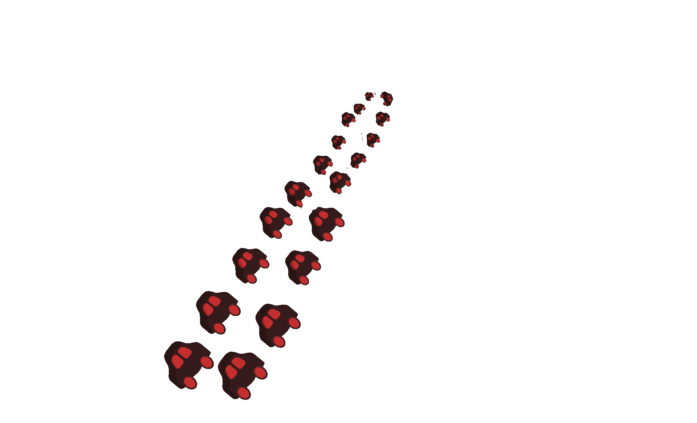

Your browser does not support the audio element.
The Earth Is
Burning
A Poem by Maya Wilson
Project made by Jovonka Johnson
↓

But I have clothes to fold.
This is the second section after zooming in.


 
